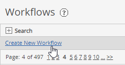
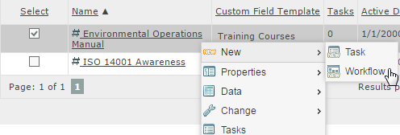
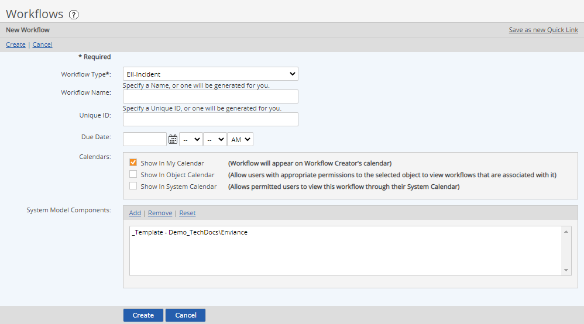
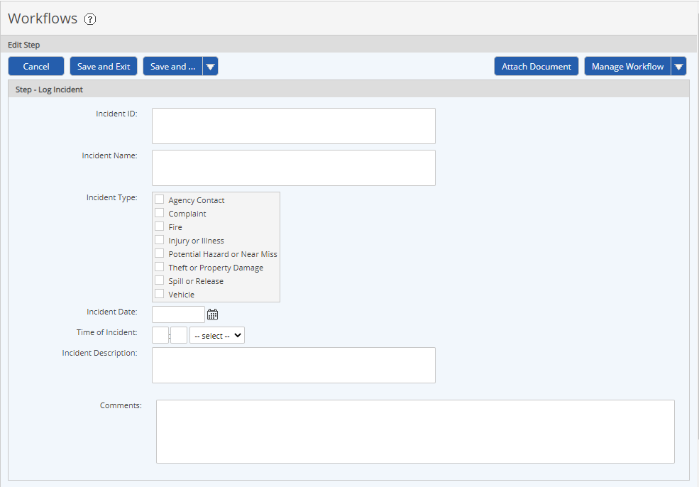

New workflow instances may be created as needed from any of the Workflow Types in your system for which you have permission.
To initiate a workflow type, you must have the Create permission for that workflow type. Permission to create a workflow of a particular type is granted through any workflow Role of which you are a member. You may need to select the object to associate with the workflow first, if your permission is object-dependent.
You can create a new workflow from any Workflow Type in the system for which you have permission. Permission to create a workflow of a particular type is granted through any workflow Role of which you are a member.
To create a new workflow:
In Workflows Manager (Tasks and Workflows page), click Create New Workflow.

To create a workflow associated with a system model object or requirement, right click the object and select New > Workflow.

Select the Workflow Type from the dropdown list.
The workflow types available for you to create depend on the permissions you have for each workflow type. Permission to create a workflow of a particular type is granted through any workflow Role of which you are a member. You may need to select the object to associate with the workflow first in order for the workflow type to appear in the list, if your permission is object-dependent. To select an object, select Add in the System Model Components box and select the object.
After selecting a system model component and the workflow type you can save this as a Quick Link to make creating a new workflow easy from your dashboard.
The fields available for editing will depend on your permissions:
Name: You have the option of specifying a name for the workflow. If none is specified, the unique ID will be used.
Unique ID: In most cases, the Unique ID will be automatically created based on a default ID generating scheme. (Only users with the explicit workflow permission may edit the ID field.)

Due Date: Due date is optional and may be specified later. The due date is the date by which all steps should be complete and the workflow closed. (Both the Due Date and Calendars options require the Schedule permission on the workflow.)
Calendars: Optionally, you may choose the calendars in which to display the workflow. See Task and Workflow Calendars.
Show in My Calendar puts the workflow on workflow participants’ calendars.
Show in Object Calendar puts the workflow on the object calendar for any associated system model object.
Show in System Calendar puts the workflow on the system-wide calendar (not common).
System Model Components: Optionally, the workflow may be associated with a system model object, such as a facility. To associate an object, click Add. Then browse or search to find the objects from the selection window. Check your selections, then click Select.
System model components may be used to specify different users for workflow assignments and different notification policies (per facility, for instance). If this is the case, it is important that you select the right system model component to associate with the workflow. See Workflow Overrides.
Click Create.
The workflow instance is created and the step completion form for the first step in the workflow is displayed.

At this point, you may:
Clicking either Save or Cancel keeps the status of the workflow open at this step.
Alternately, you may edit the workflow through the Workflow Overview and attach documents. See Attach Documents to Workflow .
To assign the step to another user:
Select an assignee from the default participants listed.
If the default assignee is a group, you can check the group to assign to the group, or click the plus sign to expand the group and select one or more group members. If there are multiple assignees, the step may be completed by any member.
The User or Group links may be available for selecting different assignees from the system users, if you have the permission to do so.